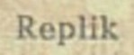
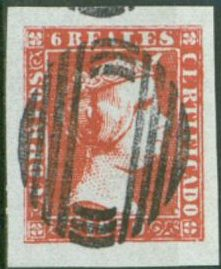
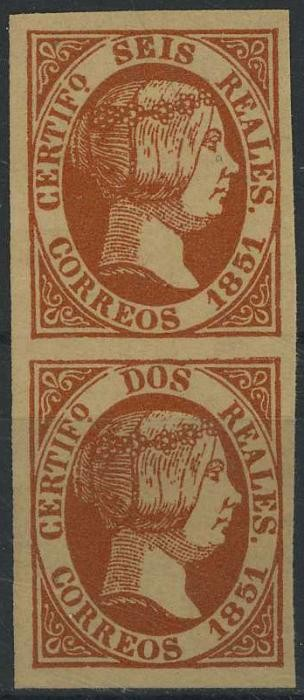
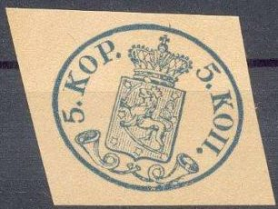
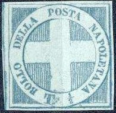
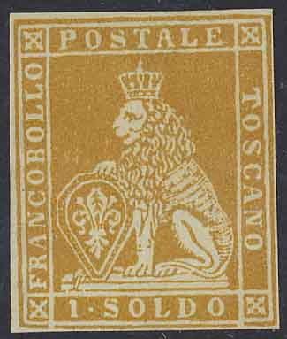

(10 r forgery and 10 r 'proof')
Return To Catalogue - Winter forgeries, part 1
Note: on my website many of the
pictures can not be seen! They are of course present in the
catalogue;
contact me if you want to purchase the catalogue.
The forger Peter Winter (Germany) made forgeries of many classic and rare stamp of several countries in the 1980's. They sometimes have the word 'replik' written on the backside (but not always). They are printed on modern paper (the paper doesn't 'look' old).

For more Winter forgeries, click here.
Peter Winter made forgeries of the 6 c, 5 r, 6 r and 10 r of the 1850 issue.
(10 r forgery and 10 r 'proof')



(A non existant 'proof' in green of the 6 c 1850 value and a
'misprint' 5 r blue)

Two forgeries of the 5 r value
(6 c forgery)
Of the 1851 issue he made forgeries of the 6 c, 2 r red, 2 r blue misprint, 5 r red, 5 r red-brown misprint and the 6 r values. He also offers a 2 r and 6 r printed together in blue(?).



Non existing 'Misprint' 6 r red with 2 r red printed together


Note that Peter Winter made the 1852 forgeries of the rare variety without dot behind 'CORREOS' (5 r and 6 r).
He also offers the 2 r, 5 r and 6 r of the 1853 issue with the rare variety 'no dot below 'Rs'.
The 1854 issue (local issue of Madrid) was represented with the 1 c and 3 c values.


He also offers the 12 c blue and red with inverted center of 1865, the 12 c blue and red with inverted center of 1866 (perforated) and the 19 c brown and red of 1866 with inverted center.


1865 issue, 12 c and 19 c with inverted centers

19 c forgery with inverted frame and wrong colours!
Forgeries of the first issues of Finland:

Forgeries of the first stamp of Norway were also made by Peter Winter. I have only seen it cancelled with 4-ring cancel with a dot in the center. Uncancelled and tete-beche forgeries were also made by him:
Peter Winter forgeries of Sweden:


Peter Winter offered forgeries of the following values: 3 sk green, 4 sk blue, 6 sk grey-brown, 6 sk grey, 8 sk yellow and 24 sk red. Of course, he also made a forgery of the misprint 3 sk yellow, even a 3 sk yellow and 8 sk yellow printed together. As with all his forgeries, they have a very modern appearance, the paper is very white. I have also seen these Peter Winter forgeries with cancels; for example: 'STOCKHOLM 18/5 18 56' on the 3 sk, 'STOCKHOLM 11 7 18 57' on the 6 sk and 24 sk, or a three ring cancel with '1' in the center on the 8 sk value. He also seems to have offered them on letter (at least two 8 s yellow stamps with a ring cancel '1').
Naples:

Both rare blue stamps of Naples were forged.
Papal States:
The 50 baj and 1 Scudo stamp were forged by Peter Winter (sorry, no pictures available yet).
Tuscany:


(Forgeries of Tuscany)
Peter Winter has made forgeries of all the 'lion' stamps of Tuscany issued in 1851. He also made forgeries of the 1860 arms issues (5 c, 80 c and 3 L).


{kind=link}
{kind=link}
{kind=link}
{kind=link}
{kind=link}